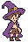
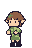
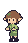
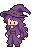
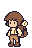

얼굴·앞머리 수정 비교
볼과 턱을 계단 모양으로 둥글게 다듬고, 주인공의 앞머리를 자연스럽게 이어 붙였습니다.

원본32×48 · 캐릭터별5색 · 같은 높이의 두 눈
남자 주인공


윗머리의 빈 부분을 갈색 앞머리로 잇고 볼·턱선을 다듬었습니다.
엘프


앞머리를 부드럽게 잇고 볼 아래에서 턱 끝까지 좁아지도록 바꿨습니다.
여마법사


모자가 머리에 앉은 상태를 유지하며 볼과 턱 끝을 둥글게 바꿨습니다.
여행자


기존 의상·배낭을 유지하며 얼굴의 아래쪽 모서리를 다듬었습니다.
엘프·여마법사·여행자8포즈에도 반영했습니다. 두 눈은 각1×2픽셀이며 피부 여백1픽셀을 유지합니다. 전체 목업에는 상하 호흡·깜빡임과 모자·망토·머리 움직임이 함께 들어 있습니다. 새 얼굴 디자인은 검토 후보입니다.